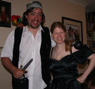
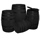

Pirates
The Last Saskatchewan Pirate
Tuesday, 18 November 2008
The Last Saskatchewan Pirate - http://www.youtube.com/watch?v=kHAl1tWvvPA
The Largest Saudi Oil Tanker Seized By Pirates
Tuesday, 18 November 2008
See http://news.bbc.co.uk/2/hi/africa/7734733.stm and http://indepth.news.sky.com/InDepth/topic/Somali%20Pirates.
It Be Talk Like A Pirate Day on You Tube
Thursday, 06 November 2008
He looked on you tube to discover more about them and found this for Talk Like A Pirate Day.
http://www.youtube.com/watch?v=4qtX2qy4wug
Ahoy Ye Pirate Fans
Friday, 19 September 2008

Ahoy there me fellow scurvy Pirate fans. I got dressed up for me squibs party today, and me hubbie dressed up for his last day at work. As a leaving gift he got a parrot, hook, dagger and eye patch. Well shiver me timbers, we even took some photos of the two of us in our outfits.It Be Talk Like A Pirate Day Today
Friday, 19 September 2008
Arrr, I did find one of me sword earrings going to work in me Hubbie's ear, me had to remove off a certain young pirate a hat and dagger before going into class (his teacher eyed his jolly roger socks suspiciously) and a young wench is getting very confused asking for balloons with pumpkins on to be blown up and going to nursery with her black cat hat on. Me have promised to cook a bat cake for her before changing into my dress. - me be off to the phrases page to make this sound better. I hope me hearties ye are doing better.
International Talk Like A Pirate Day
Thursday, 18 September 2008
International Talk Like A Pirate Day
Wednesday, 17 September 2008
For help with phrases try www.talklikeapirate.com/howto.htm, http://www.wikihow.com/Talk-Like-a-Pirate and www.yarr.org.uk/talk
International Talk Like A Pirate Day
Friday, 12 September 2008
International Talk Like A Pirate Day
Friday, 05 September 2008
International Talk Like A Pirate Day
Tuesday, 19 August 2008
Smuggling
Tuesday, 29 July 2008

Smuggling in England started about 13th century. Edward I placed a customs duty on the export of wool because it was in great demand in Europe. This was the first permanent customs system established in England. The initial duties started quite small, but as the Hundred Years War progressed, so the tax went up. The usual image of smuggling in England comes from about the 18th and 19th century, when the high taxes led to a dramatic increase in illegal imports.When I was a kid my Mother used to tell us that we were descended from the vicar of Appledore on the Devon, Cornwall border, near Bideford. Occasionally when he went to collect his horses in the morning he would discover they were tired as if they had been out all night. On those occasions if he searched the stable carefully he would find a bottle of brandy.
Ma Kettle's Tavern
Sunday, 13 July 2008
I am assuming here, that Ma Kettle's Tavern being part of the pirating world, the spirits would get smuggled in and the beers brewed on the premises. Foaming beer can be achieved from both kegs of beer and bottles of beer. But if large amounts are being consumed beer will probably be stored in kegs. We put some beer on about two months ago and tried it last night. I had forgotten how hop-y Caroline beer tasted. Although the fermentation process takes just over a week till it is ready to bottle, home brewed beer/live beer tastes better after all the sediment has fallen out, which takes a minimum of three weeks, but two months after brewing started is better.